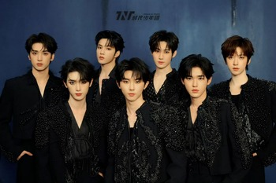
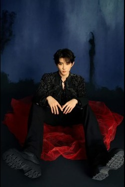
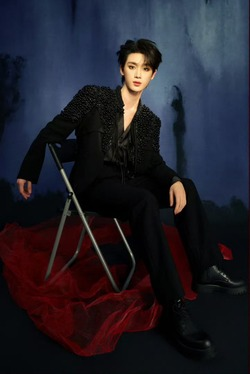
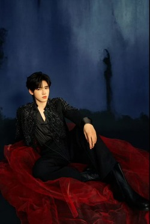
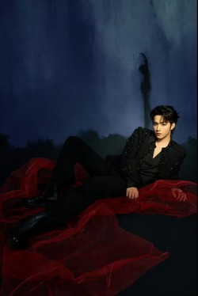
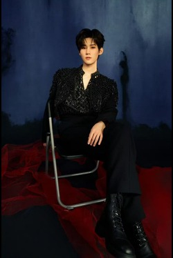
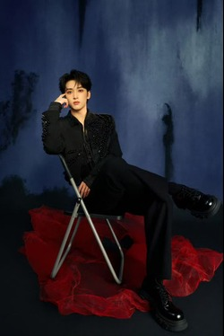
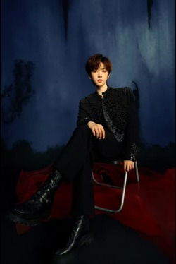

Teens in Times (TNT) is a Chinese boy band formed by Beijing Times Fengjun Cultural and Art Development Co., Ltd. The group consists of seven members: Ma Jiaqi, Ding Chengxin, Song Yaxuan, Liu Yaowen, Zhang Zhenyuan, Yan Haoxiang, and He Junlin.
On August 25, 2019, the reality show "Typhoon Boyz Transformation Battle" came to an end, and the seven members officially formed the group. On October 11, the group revealed their official name as "Teens in Times", with the English name "Teens in Times" and the abbreviation "TNT", symbolizing that the group would unleash all its potential and become unstoppable in the future. On November 23, they held their debut and first song launch event, releasing their debut song "All School Announcement", marking their official debut.

MA JIA QI
Ma Jia Qi was born on December 12, 2002, in Zhengzhou, Henan Province, China. He is a Chinese male singer and actor, as well as the leader of the boy band Teens In Time. He is currently studying in the 2022 undergraduate class of drama and film acting at the Central Academy of Drama.

DING CHENG XIN
Ding Cheng Xin, born on February 24, 2002, in Anyue County, Ziyang City, Sichuan Province, is a Chinese male singer, actor, and a member of the boy band Teens in Times. He is currently studying in the 2021 performance experimental class at the Beijing Film Academy.

SONG YA XUAN
Song Ya Xuan, born on March 4, 2004, in Boxing County, Binzhou City, Shandong Province, is a Chinese male singer and actor. He is currently a member of the boy band Teens in Times and is studying at the Central Academy of Drama.

LIU YAO WEN
Liu Yao Wen, born on September 23, 2005, in Chongqing, is a member of the boy band Teens in Times, a Chinese male pop singer, and an actor. In 2024, he made his acting debut in his first film and television work titled "The Twentieth Clause".

ZHANG ZHEN YUAN
Zhang Zhenyuan, born on April 16, 2003, in Chongqing, is a Chinese male pop singer, actor, and a member of the boy band Teens in Times. He is currently studying musical theater at the Central Academy of Drama.

YAN HAO XIANG
Yan Hao Xiang, born on August 16, 2004, in Guangzhou, Guangdong Province, is a Chinese male pop singer and actor. He is a member of the boy band Teens in Time and is currently studying in the 2022 undergraduate performance experimental class at the Beijing Film Academy.

HE JUN LIN
He Jun Lin, born on June 15, 2004, in Chengdu, Sichuan Province, is a Chinese male singer and actor. He is a member of the boy band Teens in Times and is currently studying Broadcasting and Hosting Arts in the 2022 class at the Communication University of China.